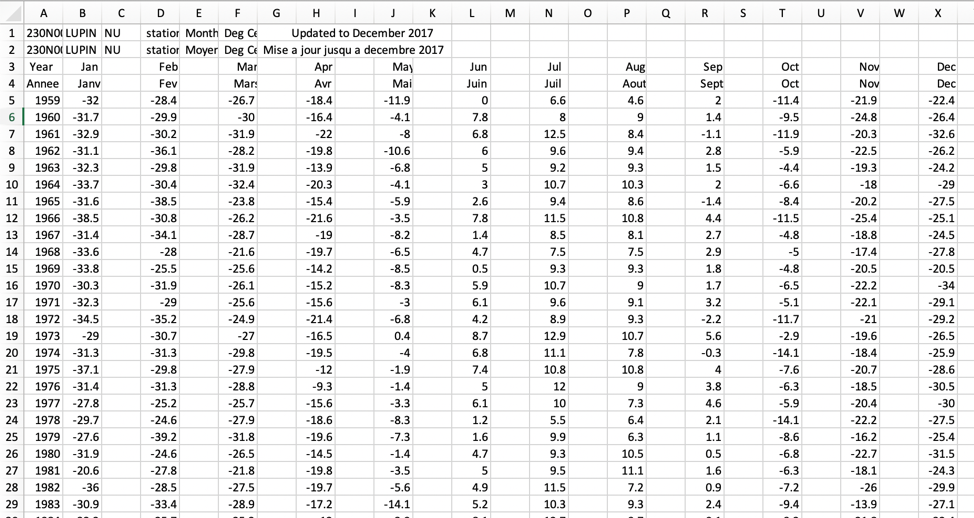
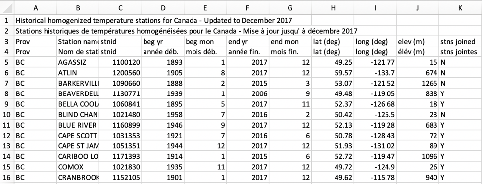
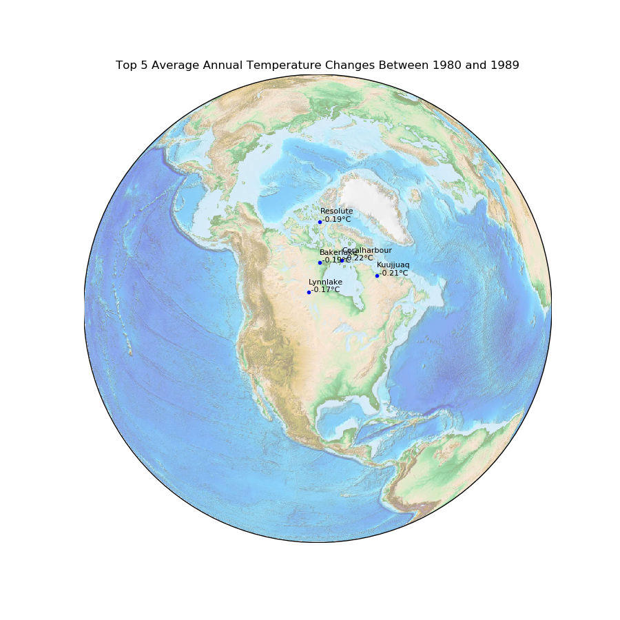
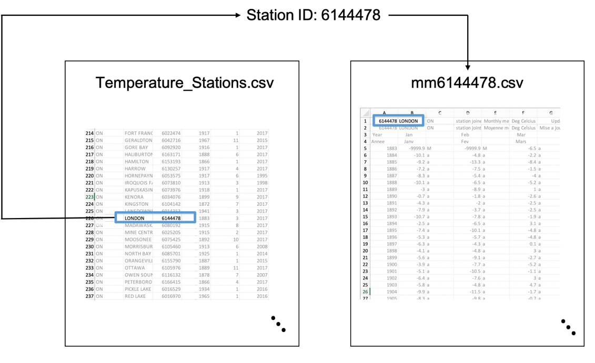

Assignment #3: It’s Always Sunny In Gander, Newfoundland¶
Worth: 10%
DUE: Wednesday November 15th; submitted on OWL by 5pm.
Starting point:
A3.pyData:
data.zipExample Output:
A3_Sample_Output.pdfCode Check Script:
A3_check.pyMarking Scheme:
A3_MarkingScheme.txt
In this assignment, we will learn to use multiple data structures to help solve a problem. Similar to Assignment 1, we will be working once again with temperature data. This time, though, we won’t be using data from a single weather station. Instead, we have data for 338 stations across Canada available for analysis. The scale and organization of these data presents new challenges.
Dependencies¶
Dependencies are software packages you need to have installed in order for an application to run properly. For this assignment, there are 4 dependencies: matplotlib, numpy, pillow, and basemap. Fortunately, matplotlib and numpy are included with Anaconda, but you will have to install pillow and basemap. This should be relatively straightforward working from the command line (Command Prompt in Windows, Terminal in MacOS).
If one or more of these packages are not installed correctly, the provided code will not run.
Enter the following lines from your command line (Command Prompt in Windows, Terminal in MacOS) in the following order:
conda update --all
conda install pillow
conda install basemap
You will have to enter y(es) when you install pillow and basemap.
Help with KeyError : ‘PROJ_LIB’ in Windows¶
If you have this KeyError come up after installing pillow and basemap
the following hack should get things working. First open a terminal and enter
the following:
conda activate
echo %PROJ_LIB%
This will print out a directory, such as 'C:\Users\YourName\Anaconda3\Library\share'.
Create a string from this that adds a second backslash before each backslash. For
example 'C:\\Users\\YourName\\Anaconda3\\Library\\share' and then use this string
in the following code (replacing my example with what you get on your system):
import os
os.environ["PROJ_LIB"] = 'C:\\Users\\YourName\\Anaconda3\\Library\\share'
and add these two lines of code in your A3.py before the line:
from mpl_toolkits.basemap import Basemap
This should get things working for you.
What If I Can’t Install the Dependencies?¶
This assignment is more fun if you can get the mapping components working properly - so please try to install the dependencies. If you’re not able to (for whatever reason), you can complete the assignment without needing them. The only differences will be that, instead of passing formatted data to the draw_map function from your last two functions, you will print out the same information to the screen.
For example, in the last function, instead of drawing a map you could instead output something like:
Top 5 Average Annual Temperature Changes from 1980 to 1989:
Coralharbour (lat, lon): X degrees
Kuujjuaq (lat, lon): X degrees
...
Bakerlake (lat, lon): X degrees
Top 5 Average Annual Temperature Changes from 1990 to 1999:
Yellowknife (lat, lon): X degrees
Fortsmith (lat, lon): X degrees
...
Bakerlake (lat, lon): X degrees
Note that your output should include the correct latitude, longitude, and temperature change values. The commented code at the bottom of the provided .py file gives you options to get you started, but you are free to try other possible options.
Organization of the Data¶
Data for this assignment was obtained from http://climate.weather.gc.ca/ and is organized into separate CSV files for each weather station. CSV files can be opened / visualized using a text editor or spreadsheet program (e.g. Excel). Try opening one of the files to examine its structure.
As we can see, these files contain data similar to what we used in Assignment 1 – except that there are extra rows and columns now that we may not need, depending on the kind of analysis we’d like to do.
Another data file is also provided: Temperature_Stations.csv
This file contains useful information about each weather station that is not included in the weather station temperature record files. Of particular interest to us are the latitude and longitude coordinates.
We now have temperature records for 338 weather stations stored in 338 different files together with one additional file containing extra information about the stations themselves. From a coding perspective, these data will be more challenging to work with than what we have seen so far.
Getting Set Up¶
Before getting to work on this assignment, you’ll need to download both the
source code A3.py and data.zip.
In order to work properly, data.zip needs to be extracted into the same folder
as the source code. In other words, your assignment should be organized into a
folder containing:
A3.pyAnother folder
datathat contains 339 CSV files
Your Task¶
For this assignment, we will be plotting maps that indicate the largest average annual temperature changes in Canada over a given period of time in years. The following figure shows the top 5 average changes in annual temperature per year in cities across Canada between 1980 and 1989.
This kind of visual analysis can be very informative. We can immediately see, for example, that the largest increases in temperature are happening at very high Northern latitudes during the 80’s. Data visualization is an increasingly in-demand skill as it can be an effective tool to communicate complex insights, patterns, trends, or other results.
To produce such maps, we need to break down the problem into more manageable pieces. Firstly, and perhaps most importantly, we must understand the organization of the provided data. As mentioned earlier, our data is spread across many files: with 338 CSV files for each of 338 weather stations’ historical temperature data plus an additional file (Temperature_Stations.csv) containing information about each station.
Breaking things down further, suppose that we want to plot temperature data for just a single city – London, for example. Based on the dataset description, the filenames correspond to the station ID from which the temperatures were recorded. So, the first thing we should do is determine which of the 338 files contains data for London.
There are a couple of ways we could do this. If we have lots of time to spare, we could search through each of the 338 CSV files and look for the one that contains LONDON in the top-left of the file. If you’re in a hurry (or just value efficiency) we can take advantage of the fact that the additional file (Temperature_Stations.csv) provides a kind of index that maps station names to station ID codes. Try opening this file again, and notice that the second and third columns tell us which station name is associated to which station ID, respectively. The link between a station name and the file containing its records is given by the Station ID. In computer science (databases, to be specific) these kinds of IDs are usually called primary keys – and they are a lot like the keys we use to index dictionaries in Python. When the same key is used across multiple files or data structures, we have a common, consistent way of accessing data that have been split up.
Looking a bit more into Temperature_Stations.csv, we can also find more information about each temperature station, including its latitude and longitude. It’s starting to look like this extra file is quite useful! Not only does it allow us to immediately find the station ID for a given station name, it also gives us other information that will be useful for our analysis.
The visualization problem we are considering can now be summarized as follows.
Simple Visualization Problem Statement
Given the name of a temperature station, its latitude and longitude, and a temperature value, plot the station name and value on a map at its geographic coordinates.
This is all the information we need to plot a single point on the map with a single temperature value. For this assignment, though, we want to do something a bit more interesting:
To do this we need four pieces of information for each station: the station name, its latitude, its longitude, and the average temperature change over a period of time in years. Our problem is that the geographic coordinates and temperature data are stored in different files. Thankfully, the Station IDs will help us to solve this problem, but not without the help of several data structures.
To determine which stations to plot, we need to determine which stations have observed the largest annual temperature changes (up or down, i.e., in absolute value) over a given time period in years. This is the analysis part of the overall task:
Data Analysis Problem Statement
Given the a time period expressed as a range of years and a number n, find the n stations that have the largest temperature changes over that time period along with the values of those temperature changes.
To do this we need to take the following steps:
obtain valid temperature data over the given time period, which I make easy for you (just calling a function I’ve written);
find the average annual temperature changes for each station duing that time period;
find the n stations with the largest annual temperature changes over that period;
convert this data into a form that can be plotted on a map (as described above).
You will do this by filling in the functions that I have provided for you.
Data Structures¶
Station Information¶
To help you with this assignment, you are provided with two I/O functions that load all available data into two dictionaries. You need to understand how these dictionaries are organized to be able to complete the assignment.
load_station_info(directory='./data/')
This function loads the station information from Temperature_Stations.csv into a nested dictionary and returns it. Recall that a nested dictionary is a dictionary whose values are other dictionaries. This enables multiple levels of indexing. For example:
>>> station_info_dict = load_station_info(directory='./data/')
>>> london_latitude = station_info_dict['6144478']['lat']
>>> print(london_latitude)
43.03
It’s important to understand exactly why the statement
station_info_dict['6144478']['lat'] works. Try calling
station_info_dict.keys() in IPython. You’ll see that this dictionary’s keys
are a list of all the station IDs. This means that we can index it using any of
those station IDs. Try it!
>>> station_info_dict['6144478']
{'prov': 'ON',
'station_name': 'LONDON',
'station_id': '6144478',
'begin_year': 1883,
'begin_month': 3,
'end_year': 2017,
'end_month': 12,
'lat': 43.03,
'lon': -81.15,
'elev': 278,
'joined': 'Y'}
As we can see, station_info_dict maps the key '6144478' to another
dictionary with its own keys and values. This second dictionary can be indexed
using, for example, the key 'lat' or 'lon' – exactly what we are doing
by calling:
station_info_dict['6144478']['lat']
Temperature Data¶
The second, larger dictionary is loaded by calling:
temp_data_dict = load_temperature_data()
This is also a nested dictionary. Use the same strategy to check what its keys are, and what kind of dictionaries it contains.
>>> temp_data_dict.keys()
dict_keys(['7066686', '501A7AR', '1168520', '8201410',
...
'6139527', '6139148', '8100989', '7025440'])
>>> temp_data_dict['6144478']
{1883: [-6.5, 5.1, 10.0, 17.3, 18.7, 16.9, 12.1, 7.5, 3.0, -3.7],
1884: [-10.1, -4.8, -2.2, 5.0, 11.5, 18.6, 17.4, 17.4, 16.3, 9.3, 1.4, -4.8],
1885: [-9.2, -13.3, -8.4, 4.2, 12.0, 15.4, 20.1, 16.0, 13.4, 7.4, 3.3, -2.9],
...
2016: [-4.1, -2.3, 3.8, 5.9, 14.4, 18.7, 22.0, 22.5, 18.6, 11.2, 6.6, -2.3],
2017: [-1.9, 0.5, 0.5, 10.0, 12.4, 19.5, 21.3, 19.3, 17.7, 12.9, 3.3, -4.9]}
From this, we can see that the dictionary temp_data_dict maps
Station IDs to another dictionary, which maps a year to a
list of temperature values.
Tying Things Together¶
One of the most important things to note is that the dictionaries
station_info_dict and temp_data_dict both have the same keys – the
Station IDs. This means that as long as we know, for example, London’s Station
ID, we can access both its temperature records and information about its
temperature station. For example:
>>> london_station_id = '6144478'
>>> london_lat = station_info_dict[london_station_id]['lat']
>>> london_lon = station_info_dict[london_station_id]['lon']
>>> london_temps_1989 = temp_data_dict[london_station_id][1989]
>>> print(london_station_id, london_lat, london_lon, london_temps_1989)
6144478 43.03 -81.15 [-1.5, -5.7, 0.0, 5.9, 13.7, 18.9, 22.1, 20.2, 16.0, 10.4, 2.8, -9.0]
Data Validation¶
Before we can analyze the data, we need to be sure that all the stations we consider have valid data for whatever time period we are considering.
A third function will obtain valid data for you given a supplied time period in
years. For example, if I have loaded the station information into a dictionary
station_info_dict and the temperature data into a dictionary
temp_data_dict using the above two functions, then the following statement
will remove all of the stations from temp_data_dict that have invalid data
between 1900 (inclusive) and 2000 (exclusive):
temp_data_dict = make_valid_temperature_data_dict(station_info_dict,
temp_data_dict,
1900,
2000)
The dictionary temp_data_dict now contains only valid data and only data
from the years 1900 to 2000. Its structure is precisely the same as before.
We’re almost ready to write some code to do the analysis!
More Provided Code¶
Three more functions have been provided to make your job easier. First is
draw_map(plot_title, data_dict).
def draw_map(plot_title, data_dict):
"""
Draws a map of North America with temperature station names and values.
Positive values are drawn next to red dots and negative values next to
blue dots. The location of values are determined by the latitude and
longitude. A dictionary (data_dict) is used to provide a map from
station_name names to a tuple containing the (latitude, longitude, value)
used for drawing.
:param plot_title: Title for the plot.
:param data_dict: A dictionary STATION NAME -> tuple(LATITUDE, LONGITUDE, VALUE)
"""
fig = plt.figure(figsize=(18, 18), dpi=120)
map1 = Basemap(projection='ortho', resolution=None, width=8E6, height=8E6, lat_0=53, lon_0=-97, )
map1.etopo(scale=0.5, alpha=0.5)
for station_name_name in data_dict:
data = data_dict[station_name_name]
print(station_name_name, data)
x, y = map1(data[1], data[0])
value = data[2]
color = 'black'
if value < 0:
color = 'blue'
elif value > 0:
color = 'red'
plt.plot(x, y, 'ok', markersize=3, color=color)
plt.text(x, y, '{}\n {:.2f}°C'.format(station_name_name, value), fontsize=4)
plt.title(plot_title)
plt.show()
fig.savefig(plot_title+".png")
The important thing to understand about this function is the format of its
parameters – data_dict in particular. It is expecting data_dict to be a
dictionary whose keys are Station Names, and values are tuples of (latitude,
longitude, value). For example, try the following.
>>> test_dict = {'London': (43.03, -81.15, 100)}
>>> draw_map('Test Map', test_dict)
Finally, two functions sort_dictionary_by_absolute_value_ascending(dictionary)
and sort_dictionary_by_absolute_value_descending(dictionary) are provided to
sort the information in a dictionary by the absolute value of the values (not
the keys) in the dictionary. Because dictionaries are not ordered data
structures, the information is returned as a list of tuples. The following
example illustrates how this works:
>>> test_dict = {'7066686': 0.004, '501A7AR': 0.099, '1168520': -0.0457}
>>> sort_dictionary_by_absolute_value_descending(test_dict)
[('501A7AR', 0.099), ('1168520', -0.0457), ('7066686', 0.004)]
The result of the sort is a sorted list of (key, value) pairs that is sorted from largest to smallest in absolute value. This information can then be used to extract the stations with the top two largest changes in temperature, for example.
Coding¶
For this assignment, your job is to use the provided data to draw maps that show the n largest average annual changes in temperature in a selection of Canadian cities over different ranges of years. You have seven (7) functions to implement. To make your job a bit easier, you are provided with function definitions complete with comments. We’re even giving you code to test your finished assignment. The challenge of this assignment is to understand, apply and work with various data structures discussed in class so far – including strings, lists, tuples, and dictionaries.
All of the instructions you need to complete this assignment are found in
the starter file A3.py. Carefully read the provided
code and comments. Play with the provided data structures using Spyder or
IPython, paying special attention to the keys and values of dictionaries. The
functions are meant to be implemented one-at-a-time, from top to bottom.
If you need clarification about what any of the functions are supposed to do, please reach out either by email or during office hours or tutorials!
Hints¶
In this assignment, we’re passing the same data structures around a lot of functions. This is hard to avoid using only the coding techniques we’ve seen so far. This isn’t so bad though. As long as you’re consistent, we only have a handful of relatively simple dictionaries to work with, and they are storing lots of data!
Know your dictionary. Always ask: what are its keys and values? Check using Spyder/IPython.
>>> station_info_dict = load_station_info()
>>> station_info_dict.keys()
dict_keys(['1100120', '1200560', '1090660',
...
'8403505', '8403801', '8504177'])
>>> station_info_dict['1100120']
{'prov': 'BC',
'station_name': 'AGASSIZ',
...
'elev': 15,
'joined': 'N'}
Test each function in isolation (as much as possible) from the others.
>>> station_info = load_station_info()
>>> temperature_data = load_temperature_data()
>>> start_year = 1950
>>> end_year = 2000
>>> temperature_data = make_valid_temperature_data_dict(station_info,
temperature_data,
start_year,
end_year)
>>> temperatures = temperature_data['2204101'][1989]
[-28.7, -18.1, -22.5, -6.3, 4.2, 13.9, 17.7, 17.3, 7.6, -0.8, -20.0, -25.3]
>>> mean_temp = compute_average_temp(temperatures)
-5.083333333333333
Example test code is provided at the end of the file. Look at it to get an idea of how we intend the program to work.
What to submit on OWL¶
Your version of
A3.pyMake sure your NAME and STUDENT NUMBER appear in a comment at the top of the program.
List anyone you worked with in the comments, too.
Make sure it’s commented.
Make sure your code works when the included test code at the bottom is uncommented. A large part of programming is consistency and cooperation with existing code!